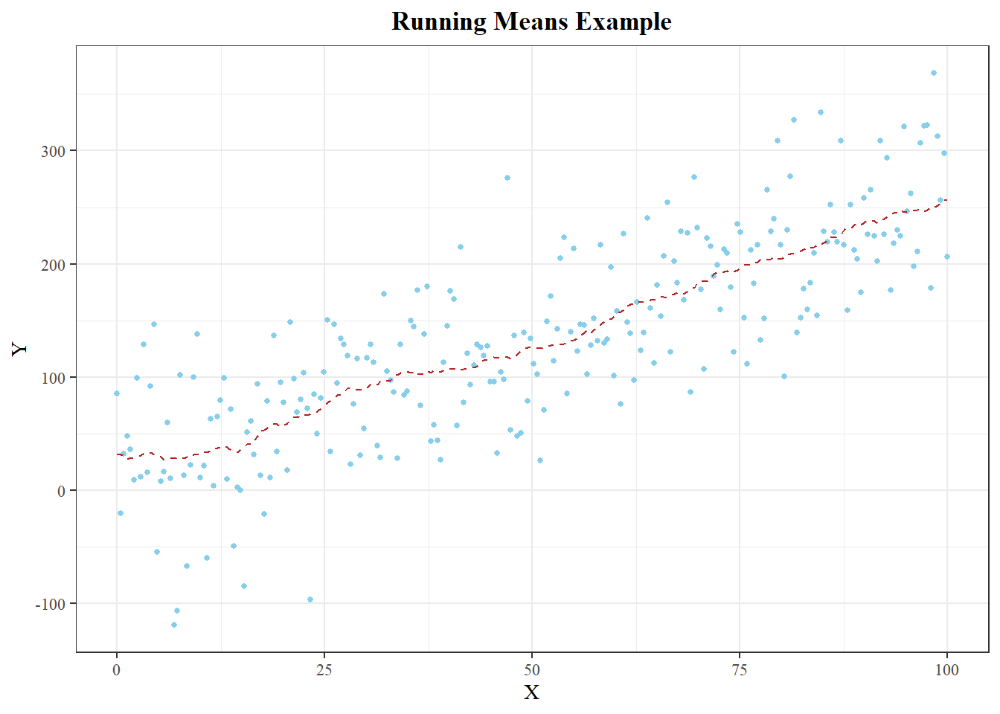

###################################### R ######################################
# Create function for running mean:
running_mean <- function(x, y, h) {
# Arrange the data from lowest x_i to sample max
dat <- dplyr::arrange(data.frame(x = x, y = y), x)
x_sorted <- dat$x
running_means <- numeric(nrow(dat))
# For each x_i, calculate the mean y value within the window (+- h)
for (i in 1:nrow(dat)) {
running_mean <- mean(dat[abs(dat$x - x_sorted[i]) <= h, "y"])
running_means[i] <- running_mean
}
return(running_means)
}
# Test the function with dummy data
set.seed(42)
n <- 250
h <- 10
x <- seq(0, 100, length.out = n)
y <- 10 + 2.5 * x + rnorm(n, 0, 55) # simulate a regression model
r_means <- running_mean(x, y, h)
dat <- data.frame(x = x, y = y, r_means = r_means)
# Build the plot
r_means_example <- ggplot2::ggplot(dat) +
ggplot2::geom_point(ggplot2::aes(x = x, y = y), col = "skyblue", size = 1) +
ggplot2::geom_line(
ggplot2::aes(x = x, y = r_means),
col = "firebrick", lty = 2
) +
ggplot2::labs(x = "X", y = "Y", title = "Running Means Example") +
ggplot2::theme_bw() +
ggplot2::theme(
text = ggplot2::element_text(family = "serif"),
plot.title = ggplot2::element_text(hjust = .5, face = "bold")
)
###############################################################################September 9, 2024 - September 11, 2024
September 9, 2024
Data Visualization
Overview
Here’s a cheat-sheet for plotting:
- Continuous variable
- Histograms
- Kernel density
- Box plot
- violin plot
- QQ-plot
- Categorical variable
- Bar chart
- Pi chart (ew)
- Visualizing relationship between variables
- Hexbin plots
- Scatter plot matrix
- 3D plots
- Trellis plots and heatmap
- Time-series and longitudinal data visualizations
- Time series plots
- Spaghetti plots
- Lasagna plots (yum)
- Specializaed visualization techniques
- Networks and maps, survival plots, waterfall and forest plots, Venn diagrams
Continuous Variables
- Histogram
- When should you plot frequency? When should you plot density?
- If sample size is important, plot frequency
- When comparing the shape of the data to another distribution, use density
- When should you plot frequency? When should you plot density?
- Density plot
- What is density?
- The area under the curve = 1
- What is density?
- Box plot
- What information do we lose going from a density plot/histogram to a box plot?
- We lose important information about the shape of the distribution. Looking at the box plot is like looking down at an aerial map of a mountain range. We can get an idea of its shape, but we can’t necessarily see the contours of the peaks and ridges that we would get from the ground looking up
- What information do we gain?
- We gain median + IQR information, plus whiskers
- What information do we lose going from a density plot/histogram to a box plot?
- Violin plot
- Attempts to bridge the density and the box plot
- Here’s my question. Why not overlay the box plot at the bottom of a histogram/density curve?
- Hexbin plot
- This is like a heat map plotting two continuous variables. I think the advantage of this over a 2D scatterplot is that if we have very large datasets, it gives us additional information about the density of the data
- QQ-plot
- We can set a QQ-plot to see where the expected quantiles and the actual quantiles align for any distribution
- Distribution of the p-value
- Did you know that under the null hypothesis, the p-value is distributed uniformly between 0 and 1? So, if you have LOTS and LOTS of p-values (think GWAS), you can create a density plot to see if it appears to be uniformly distributed
Categorical variables
- Bar plot
- What’s the difference between
ggplot2::geom_barandggplot2::geom_col?- geom_bar is for frequency bar plots, and geom_col is for a numeric y value (like revenue) and multiple categories (departments A, B, and C)
- What’s the difference between
- Pie plot
- Emphasizes proportions
- Often hard to interpret because our eyes aren’t great at area
Mutliple variables
- Group vs Stacked bar plots
- Grouped bar plots emphasizes comparison within groups
- Stacked bar plots emphasizes comparison between groups
- Scatter plot matrix
- Useful to look at relationships between multiple continous variables
- Can add correlation as another dimension to the plot (e.g. color)
- 3D scatter plots
- Can check linearity in 3 dimensions
- Trellis plot
- Stratify to see within group detail
- Is often helpful to have all groups in a single plot too for comparison between groups
- Heatmaps
- Good for correlation, gene mapping, etc.
- Time
- Time-series
- Spaghettie plot
- Lasagna plot
- Networks
- Mapping knowledge networks
- Arc diagram
- Similar information as a network graph, emphasizes different things
- Map plots
- Often a “heat” map
- K-M curves
- Waterfall plots
- Forest plot
- Useful in meta-analysis
- Venn diagram
- Overlapping data
Three take-aways
- Picture a QQ plot generated with this R code:
x <- runif(1000, 0, 1); car::qqPlot(x). This will create a plot shaped like an ‘S’. This is because the y values left of the line are much HIGHER/LOWER than expected in a normal distribution, and the y values right of the line are much HIGHER/LOWER than expected in a normal distribution. Using this logic, plots with both tails above the line will be RIGHT/LEFT skewed (think: lower y-values onto the line shifts distribution in what direction?), and plots with both tails below the line will be RIGHT/LEFT skewed (think: raising y-values onto the line shifts distribution in what direction?). - In what type of analyses are forest plots particularly useful?
- Histograms can be constructed to show either frequency counts or density. Explain what density is (i.e. the actual value on the y-axis).
September 11, 2024
Smoothing
There are several important smoothing methods we went over in class. After the lecture, I was curious as to why smoothing is important in the context of statistical learning. I asked ChatGPT:
- Prompt: I’m in a statistical learning class. We’re going to get into machine learning methods later in the course, but for now, we’re talking about smoothing. For example, we talked about the difference between running mean, kernel smoothing, local regression (LOWESS), and splining. We spent a lot of the class discussion on creating smoother vs more granular lines with the method, parameters etc. Here’s my question. Why is this going to be useful in the context of machine learning? Please write a paragraph explaining how these concepts are applied in machine learning.
- Response: Smoothing techniques, like running mean, kernel smoothing, local regression (LOWESS), and splining, are foundational for understanding how to balance flexibility and interpretability in models. In machine learning, these methods help illustrate the trade-off between bias and variance, which is crucial when building predictive models. By controlling the smoothness of a function, you can prevent overfitting to noisy data (high variance) or underfitting (high bias) by finding the right complexity for your model. Techniques like splines or kernel smoothing are often used in feature engineering, where creating smoother, more representative features improves the predictive power of machine learning models. Additionally, methods like LOESS can be used for understanding relationships in the data, especially in non-linear regression models.
Interesting. It sounds like the principles are important, but maybe we will also use these methods when constructing models in the future? Hopefully there will be more to report later on in the semester. As a reminder, the four goals of this course are to 1. create reproducible reports, 2. create high-quality graphs, 3. create a predictive model, and 4. explore a new dataset. I think I’m most curious about whether this falls into the category of 2 or 3, but maybe both.
Regardless, let’s look at these smoothing methods:
Running Mean
- Method
- Choose a window (h)
- \(\hat{y_j} = \frac{1}{k} \sum_{i = 1}^k y_i\), such that \(|x_i - x| \le h\) for all \(i = 1, 2, ..., k\)
- Repeat this for all values of \(x_j, \quad j = 1,2,..., n\)
- This is the simplest method. Large values of \(h\) will yield smoother lines. Small values of \(h\) will yield more sensitive lines
Here’s an R function for the running mean:

Kernel Smoothing
- Kernel smoothing craetes a smoother line than running means. Where the running means is “all or nothing” for each \(y_i\) used to calculate the window mean, kernel smoothing applies a weight function to the \(y_i\)’s in the window. For example, a value of \(y\) with a corresponding \(x\) value close to \(x\) (i.e. the center of the window) will have a higher weight than a value of \(y\) with its corresponding \(x\) value closer to the edge of the window.
- Formula:
- \(\hat{g}(x) = \frac{\sum_{i = 1}^n y_i w(\frac{x_i - x}{h})}{\sum_{i = 1}^n w(\frac{x_i - x}{h})}\)
- A couple of important things to note about this formula: it’s a lot simpler than it looks. The numerator is the weighted average of all \(y_i\) values in the window, with the weight being a function of the distance from the center. The denomitor is simple the sum of the weights, which will be 1 in most cases
- The running average is a special case of the kernel smoother where all weights are uniform across the window of h
- Edge effects
- Think about the literal edge cases (x max and x min). The window will not take in values lower than the min at the min, and it won’t take values larger than the max at the max. This creates a bias because the window mean does not have sufficient data at the edges
Local Regression
- LOcally WEighted Scatterplot Smoothing (LOWESS) performs a non-parametric regression within a window of the point of interest. This takes away the problem with the edge effects
- Like the previous methods, a unique \(\hat{y_i}\) is calculated for each \(x_i\), and a smooth line is created from these estimates
Splines
- Splines are similar to local regression. However, instead of creating \(n\) models, we define \(k\) knots (points of interest where we think the model should change) and create (I think) \(k + 1\) models
Three Take-aways
- In kernel smoothing, the “edge effect” is when the edges are BLANK because of limited data at the sample BLANK and the sample BLANK